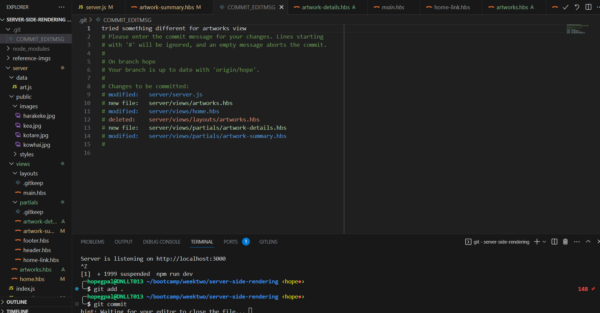
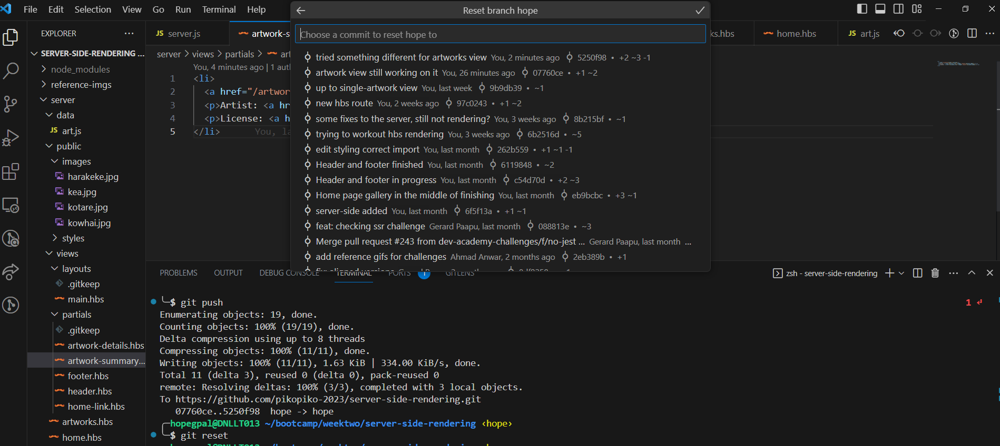
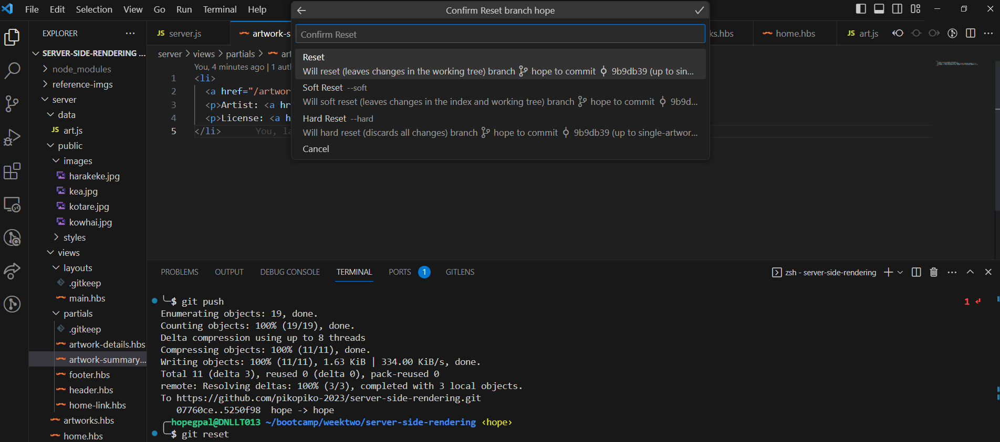

reset: This command is used to reset the current branch to a specific commit or state. It can be used to unstage changes or move the branch pointer to a different commit.
The "reset" command in Git is like an old school VCR, rewinding a movie takes you to a specific scene & fast-forwarding to a different one, you can choose to either record over the movie, or 'modify' along the way. It helps manage the branch's state and commit history effectively.
Here's an example of what I encountered today:
I got swept up into my server-side-rendering exercise, and rushed myself, and so I made a lot of silly mistakes. I freaked out because I didn't know where I made the issue (that will teach me for not doing my commits more often)! Anyway, I decided this was the perfect opportunity to use one of the 'new' git commands.
-------------
These are the steps I took to perform the ```git reset```
1. This was the code I needed to reset, I went down a slippery slope, I know, I know haha.
2. This is where ```git reset``` really starts to shine, start by using the command in you terminal.
Hover over the word 'reset' in the command line & click. It will drop down these three reset options.
I choose to do a ```hard reset``` as I knew I wasn't happy with my coding session at all, it was all over the place so starting fresh from my original commit was definitely my best option.
-------
Moral of my story here, sometimes it is too late to be up coding hahha.
Ngā Mihi koutou!